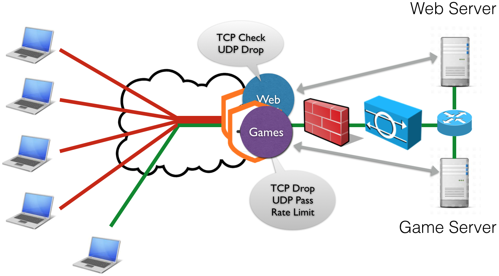

Main Features
Traffic enforcement
TCP sessions validation
Dynamic whitelisting with expiration on successful session check
User-defined whitelist/blacklist/graylist of source subnets with CIDR notation
ACL-like accept/drop policies based on UDP/TCP port, ICMP type, etc.
Other drop policies based on IP TTL values, UDP payload size, fragments, etc.
DNS SLIP-like checks: force TCP, etc.
Mitigation UDP-based amplification attacks.
Signature-based filtering (offset and string)
HTTP filtering, based on request items name/content.
Traffic Throttling: packets below the threshold are forwarded, otherwise they are discarded. This guarantee that unwanted traffic will have an egress rate capped to a specific value. Ability to specify the rate based on protocol and source or destination.
Traffic checkers are implemented as plugins with a clean API, so that more checkers for specific protocols can be created.
Multi-Tenancy
Ingress traffic is split towards several virtual mitigators, based on the destination IP address, this way it is possible to specify traffic enforcement policies per destination subnet
Each virtual mitigator is bound to traffic enforcement profiles: default, white, black, gray. Each profile contains a traffic enforcement configuration (e.g. SYN check=yes, ICMP Drop=No) and applies to source IPs according to the lists (white/black/gray).
Global or per-destination bypass mode

Traffic Visibility
Statistics dump to RRD for keeping an history of traffic trends.
Ability to send sampled/full good/bad/all traffic to external virtual devices (e.g. for traffic analysis or dump).
Hw acceleration and Scalability
Hardware bypass NIC support (Silicom): ensures that nScrub will have no impact in the infrastructure in case of hardware failure.
Load balancing across cores using hw RSS or custom sw distribution
UI
REST API for reconfiguring the engine on-the-fly
CLI tool with auto-completion